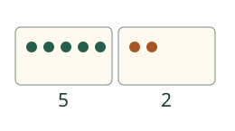
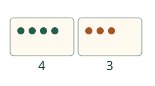
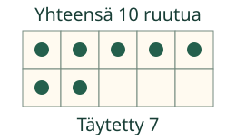

Loikka jakaa seitsemän paperimerkkiä kahteen rasiaan. Voiko ne jakaa eri tavoin?
Koko määrä ja kaksi osaa
Tavoite: Löydän kaksi osaa, joista tulee annettu koko määrä.

Mieti: Jos siirrät yhden merkin rasiasta toiseen, muuttuuko yhteismäärä?

Myös 7 ja 0 sopivat: kaikki ovat yhdessä rasiassa ja toinen on tyhjä. 0 tarkoittaa tyhjää osaa.
Etsi puuttuva osa
Merkkejä on yhteensä 7. Näkyvissä on 4. Kupin alle jää 3, sillä 4 ja 3 ovat yhteensä 7. Seitsemän on koko määrä, ei kupin alla oleva osa.
Kokeile itse
Uusi tilanne ja kympin ruudukko
Kahdessa taskussa on yhteensä 8. Ensimmäisessä on 3. Toisessa on 5, sillä 3 ja 5 ovat 8.

Voit kokeilla näitä tehtäviä myös valikosta.
Tutki lisää
Etsi alla eri pareja, joista tulee 5. Myös 2 ja 3 sekä 3 ja 2 sopivat. Kuinka löydät vielä toisenlaisen parin? Kokeilu alkaa koko määrästä 5.
Tutki viiden hajotelmia tässä
Malli on ilman JavaScriptiä alkuperäisessä kohdassaan: avaa mallin kohta.
Lopuksi: Miten tarkistat, että kaksi osaa sopivat annettuun koko määrään?
Opettajalle ja ilman ruutua
Luokat 1–2, concept/atomic. Vaadittu JA-ryhmä: M-NUM-02 ja M-NUM-03. Kokonaismäärät 1–10 ja myös tyhjä osa 0 opetetaan kuvin. Yhteenlasku- ja yhtäsuuruusmerkit ovat tässä annettua esitystukea, eivät uusi merkkitaitojen koe. Ei muotojen nimiä, puhepakkoa, nopeusrajaa tai pakollista laskentatäpäyttelyä.
Jaa paperipaloja kahteen rasiaan ja siirrä yksi rasiasta toiseen. Tarkista välillä kaikki palat yhdessä. Peitä sitten toinen osa ja pidä koko määrä sekä näkyvä osa saatavilla. Osia ei tarvitse jakaa puoliksi. Harjoituksen vapaassa tehtävässä kaikki oikean koko määrän antavat parit hyväksytään myös eri järjestyksessä. Puuttuvan osan tehtävässä tunnettu osa on annettu, joten vastataan juuri puuttuvaan osaan.
Vastauskuva näyttää oppijan nykyiset osat, jotka voivat myös sisältää väärän yhteismäärän; annettu tavoitemäärä on erikseen näkyvissä. Erillinen siirtomalli säilyttää aina annetun koko määrän ja samat merkit. Apukuva tai puuttuvan osan paljastus ei muuta tehtävää tai kelvollista palautetta. Tuettu harjoitus ei todista kaikkien hajotelmien muistamista, itsenäistä päättelystrategiaa tai fyysistä jakamista/punnitsemista. Ei formaalia prosessirubriikkia, henkilökohtaista pelihallintaa, tallennusta tai vaikuttavuusväitettä.